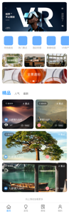

01 / Projects
代表作品
从 0 到 1 的复杂系统到 C 端增长，以下项目均体现"场景拆解 → 状态穷举 → 视觉降噪 → 工程落地"的可复用方法论，点击卡片查看项目详情。
02 / Process
跨行业方法论
场景拆解
从业务流与用户角色出发定义信息优先级：医院、患者、医生、设备使用者各自关心什么，先想清楚再画界面。
状态穷举
登录、异常、空状态、治疗中、禁忌拦截……把每种状态画成界面。状态覆盖的完整性，是界面设计的基本功。
视觉降噪
用层级、对比与节奏控制注意力，让关键信息在最对的位置、以最小的学习成本被理解。
工程落地
交付组件、标注与切图，跟开发对齐实现边界，保证设计意图准确还原。
03 / Capabilities
核心能力矩阵
不依赖单一行业知识，用可迁移的通用能力适配不同领域的数字化转型。
复杂系统架构
在强约束（小屏 / 多角色 / 高密度数据）下设计信息架构与交互流程，把复杂业务拆解为低认知负荷的清晰界面。用户满意度 95%。
设计系统与组件化
自建 5 套企业级组件库，覆盖表格、图表、表单、日历等核心模块，复用率 80%+，节省约 50% 重复设计工时。
用户增长与业务闭环
从用户旅程出发设计核心转化路径，通过界面与交互优化提升参与度，在电商项目中页面转化率提升 15%。
跨行业可迁移方法论
"场景拆解 → 状态穷举 → 视觉降噪 → 工程落地"四步法，从政务、电商到企业服务多领域复用，快速适配新行业。

03 / About
关于我 · 职业规划
我是11 年全流程 UI/UX 设计师，主导 30+ 款 B/C 端产品，完整走过需求拆解、信息架构、设计交付到工程落地的全过程。 擅长在复杂系统约束下建立可复用的设计系统，并让设计真正驱动业务指标。
我相信好的界面设计是"看不见的"：用户不需要学习说明书，就能顺利完成操作。 我习惯把设计拆成可验证的状态矩阵再收敛视觉语言，并在团队节奏中稳定交付、持续迭代。
职业规划
长期深耕复杂 B 端系统与数据产品方向，把 11 年沉淀的设计系统方法论与跨行业经验， 应用到更高密度的业务场景；以"设计即产品力"为目标，持续在团队中承担从 0 到 1 与长期迭代的双重角色。
- 复杂 B 端系统
- C 端产品设计
- 数据可视化
- Design System
- 国际化多语言
- 用户增长
- Figma / HTML5 / CSS3
- AI 设计工作流
04 / Contact
期待加入你的团队
11 年 B/C 端复杂系统设计经验，正在寻找可长期投入的全职 UI/UX 岗位。欢迎交流作品与职业规划。